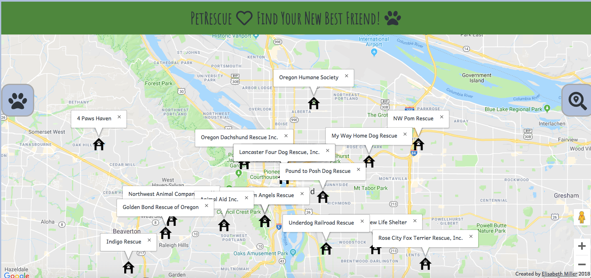
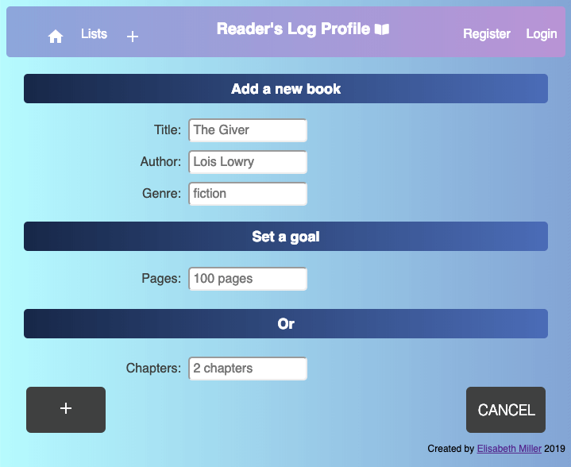
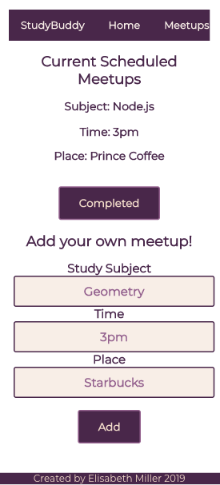

Hello, I'm Elisabeth.
Fullstack Javascript Web Developer.
Bio
I am a fullstack web developer. I recently graduated from the Fullstack Flex bootcamp and Thinkful. I am enthusiastic about coding because technology is such an innovative and creative field. I love how endless the possibilities and opportunities are. Outside of coding, my passions are cooking, hiking, sewing, and playing with my cat and dog.
PetRescue
PetRescue is a web application designed to help users find and rescue pets in their area. It harnesses the PetFinder API to search a user selected area for pets available for adoption at shelters. After finding search results the shelters are helpfully displayed on a google map so users can easily locate the pets! Available animals are listed with important information as well as a link to adoption sites.
Tech Stack
HTML, CSS, JQuery, Javascript
Live Demo Code ReadingLog
ReadingLog is a logging web application. It is designed to help the user keep track of reading goals. This app lets the user input and update goals for books and then displays in an organized list.
Tech Stack
HTML, CSS, JQuery, Javascript, Node.js, Express, MongoDB, Mocha, Chai, Chai-http
Live Demo Code Study Buddy
Study Buddy is a an app that allows users to connect with people to study with. The app allows users to create and find meetups in their area where students are studying together. User can login with google to create an account. From there, the user can create their own meetups to help encourage others to come and study with them! Or they can simply wait for others to create a meetup and choose to go and study.
Tech Stack
HTML, CSS, Javascript, React.js, Node.js, Express, MongoDB, Mocha, Chai, Chai-http
Live Demo Backend Code Frontend Code 